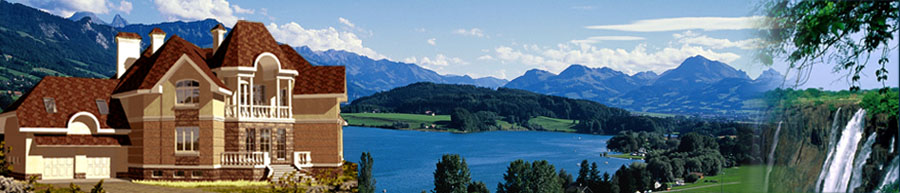

Заказать проект
Категории проектов
- Проекты таунхаусов и блокированных домов
- Проекты домов на две семьи
- Проекты узких домов
- Проекты бань
Каталог архитектурных проектов
- Проекты кирпичных домов
- Проекты домов из газобетона и пенобетона
- Проекты домов из бруса и бревна
- Проекты каркасных домов
Площади домов
- до 150 м2
- от 150 до 250 м2
- от 250 до 400 м2
- от 400 м2
Садовые участки

Каталог архитектурных проектов
Проекты для Вашего будущего дома
Каталог готовых архитектурных проектов коттеджей myhouse.ru явился результатом многолетней работы лучших российских специалистов в области архитектуры и строительства. Это своего рода «Собрание сочинений» от современной загородной архитектуры, в котором каждый может найти что-то свое.Проекты коттеджей из каталога нельзя называть типовыми, поскольку разрабатывались они в порядке индивидуального проектирования непосредственно под нужды будущих владельцев загородных домов. Более 95% проектов реализовано в строительстве. Большая часть проектов реализована неоднократно, как в Московской области, так и по всей территории Российской Федерации, в странах ближнего зарубежья.